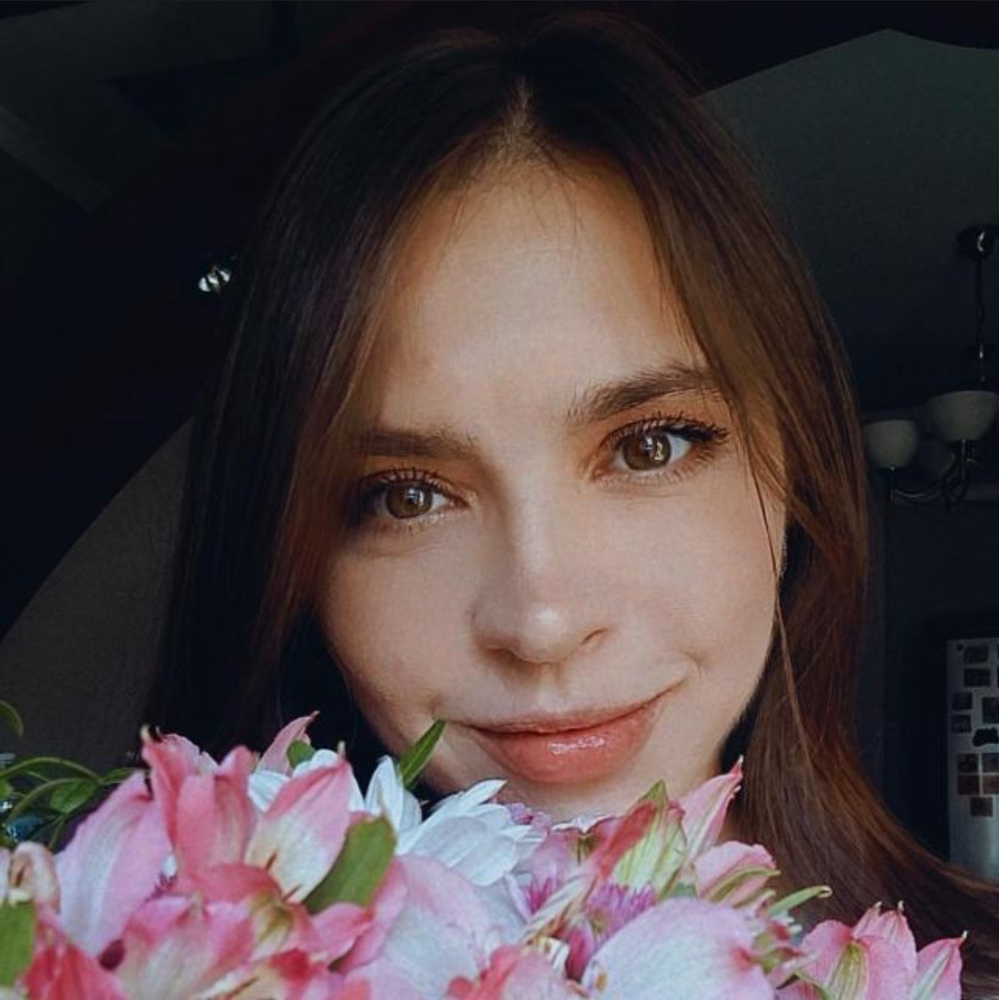

<div class="d-md-flex flex-md-equal w-100">
    <div class="bg-body-tertiary col " id="about-me">
        <div class="my-3 py-3">
        <h2 class="display-5 text-center">Обо мне</h2>
        </div>
        <div class="bg-body shadow-sm mx-auto" style="width: 80%; border-radius: 21px 21px 0 0;">
            <div class="row">
                <div class="col-5">
                    
                </div>
                <div id="text-column" class="col-7">
                    <p>
                    Меня зовут Кристина Оразмурадова, я - практикующий психолог-консультант, телесно-ориентированный терапевт, психосоматолог, медиатор.<br /><br />
                    Я влюблена в глубокую работу с телом. Более 140 мышц связаны с нашим психологическим содержанием. Активируя мышцу, мы можем включить определённые эмоциональные переживания и перепрожить новый опыт, попутно закрывая убеждения, которые мы из любви присоединили в детстве к сценарию жизни.<br /><br />
                    Опыт работы: 8 лет.<br /><br />
                    Образование: ОНУ им. И.И.Мечникова, Институт социальных наук (преподаватель социально-политических дисциплин - социология, философия, политология, психология; политическая психология; конфликтология). 
                    Дополнительное образование: телесно-ориентированная терапия, психосоматика, сказкотерапия, марафон "Чашка кофе с Леной Адамовой", "Психосоматика" (2 поток), видеокурс "Кайфолова", 
                    курс Елены Татариной - "Сила рода: что это такое и как получить доступ", МК "О чем мне говорит мое тело?", "Психосоматика нелюбви к себе: как помочь?", МК "Супервизия обиды: как отпустить боль?".<br /><br />
                    Личные ценности: свобода, здоровье, удовольствие быть собой, уважение к личности любовь, самопознание, личная терапия (170 часов). Увлечения: пишу практики ТОТ, тайский бокс, прогулки на велосипеде.
                </p>
                </div>
            </div>
            
            
            
        </div>
    </div>
</div>


<!-- <div class="d-md-flex flex-md-equal w-100 my-md-3">
    <div class="text-bg-dark col overflow-hidden" id="about-me">
      <div class="my-3 py-3">
        <h2 class="display-5 text-center">Обо мне</h2>
      </div>
      <div class="shadow-sm mx-auto"  style="width: 80%; height: 100%; border-radius: 21px 21px 0 0; padding: 5px;">
        Практикующий психолог-консультант (терапевт ТОТ, психосоматолог, медиатор).<br /><br />
        Я влюблена в глубокую работу с телом. Более 140 мышц связаны с нашим психологическим содержанием. 
        Активируя мышцу, мы можем включить определённые эмоциональные переживания и перепрожить новый опыт, 
        попутно закрывая убеждения, которые мы из любви присоединили в детстве к сценарию жизни.<br /><br />
        
      </div>
    </div>
    <div class="bg-body-tertiary col overflow-hidden" id="education">
      <div class="my-3 p-3">
        <h2 class="display-5 text-center">Образование</h2>
      </div>
      <div class="shadow-sm mx-auto" style="width: 80%; height: 100%; ">
        ОНУ им. И.И.Мечникова, Институт социальных наук (преподаватель социально-политических дисциплин - социология, философия, политология, психология; политическая психология; конфликтология).
        
        Дополнительное образование: телесно-ориентированная терапия, психосоматика, сказкотерапия, марафон "Чашка кофе с Леной Адамовой", "Психосоматика" (2 поток), видеокурс "Кайфолова", на данный момент нахожусь в обучении у Елены Татариной - "Сила рода: что это такое и как получить доступ" (Обучение), МК "О чем мне говорит мое тело?" (Обучение), "Психосоматика нелюбви к себе: как помочь?" (Обучение), МК "Супервизия обиды: как отпустить боль?" (Обучение).
        Личные ценности: свобода, здоровье, удовольствие быть собой, уважение к личности любовь, самопознание и личная терапия (170 часов).
      </div>
    </div>
  </div> -->